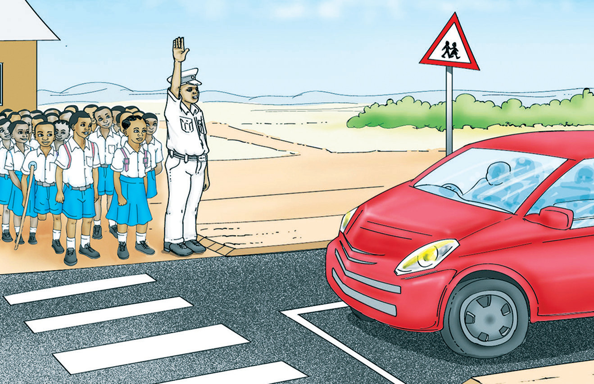

Soma habari ifuatayo, kisha jibu maswali.
Kuvuka barabara kwa usalama
Siku moja, shule yetu ilitembelewa na mgeni. Mgeni huyo alikuwa askari wa usalama barabarani. Alitueleza kwamba, kabla ya kuvuka barabara, tunapaswa kuwa makini. Tunatakiwa kutazama kulia, kushoto, kisha kulia tena. Tukiona hakuna gari lolote, ndipo tuvuke. Alitueleza kuwa tunapotembea barabarani, tutembee upande wa kulia.
Nilimuuliza, kwa nini tunatakiwa kutembea upande wa kulia? Alijibu, kulia, utaweza kuona gari linalokuja mbele yako. Alitueleza kuwa baadhi ya barabara zina alama za milia.
Alama hizo ni za mistari mieupe. Alama hizo pia huitwa alama za pundamilia. Zimewekwa kwa ajili ya watu wanaovuka barabara kwa miguu. Gari linapofika eneo hilo, linapaswa kusimama. Mgeni alitueleza kuwa, tukitaka kuvuka barabara, tuombe msaada. Msaada wa kuvushwa utolewe na watu wazima. Baada ya kujifunza darasani, mgeni alitupeleka barabarani.
